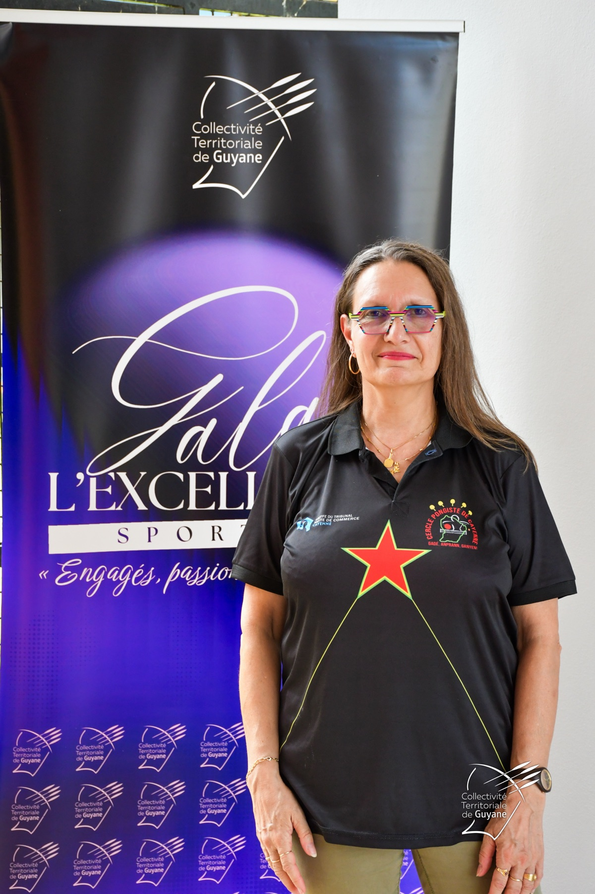

Sophie Campillo Rava
- Engagement
- Depuis 1999, plus de 25 ans de bénévolat
- Rôles clés
- Secrétaire générale de la ligue et arbitre régionale
Figure incontournable du tennis de table en Guyane, Sophie a officié sur les grands championnats des Outre-Mer et de la Caraïbe. Son dévouement au secrétariat de la ligue a été salué par le Mérite Fédéral.
Soutenir ce parcours